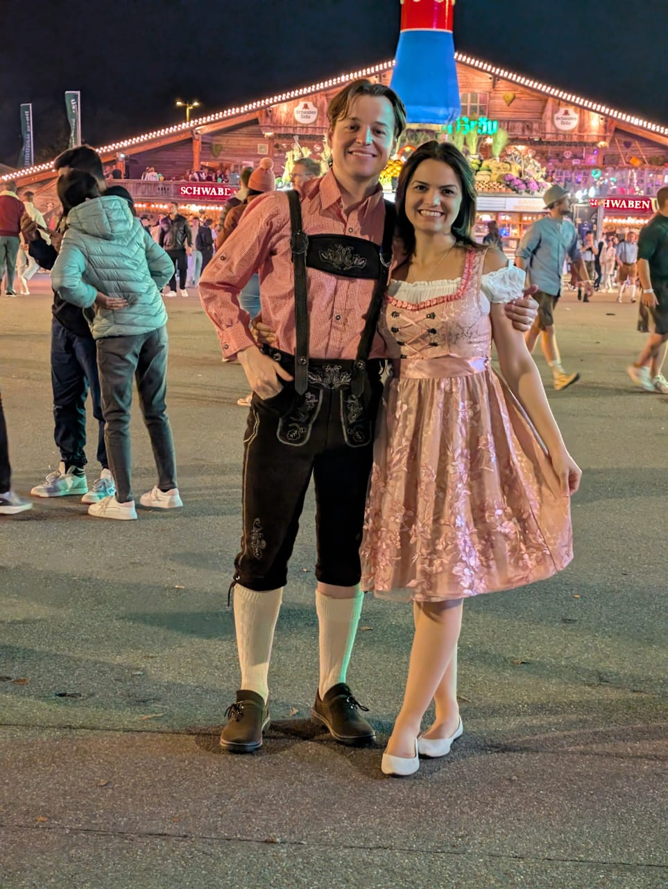

Cultura
Artes e Conhecimento
A Alemanha é reconhecida por sua forte influência na música, literatura, filosofia e ciência. Grandes nomes como Beethoven, Bach, Goethe, Kant e Einstein nasceram no país, e suas obras marcaram profundamente a cultura mundial.

Tradições e Festas
As tradições alemãs são muito valorizadas. A Oktoberfest, em Munique, é a festa mais famosa, celebrada com trajes típicos, música regional e culinária tradicional. Os mercados de Natal também são destaque, reunindo luzes, artesanato e comidas típicas em várias cidades.
Gastronomia
A culinária alemã é variada e rica. Entre os pratos mais conhecidos estão as salsichas (Wurst), o schnitzel, o chucrute e o pretzel. Cada região do país possui suas próprias especialidades, e a produção de pães e cervejas é muito tradicional.

Estilo de Vida
Os alemães costumam valorizar pontualidade, organização e respeito às regras. O país também prioriza qualidade de vida, educação, cultura e contato com a natureza, mantendo equilíbrio entre trabalho, lazer e sustentabilidade.